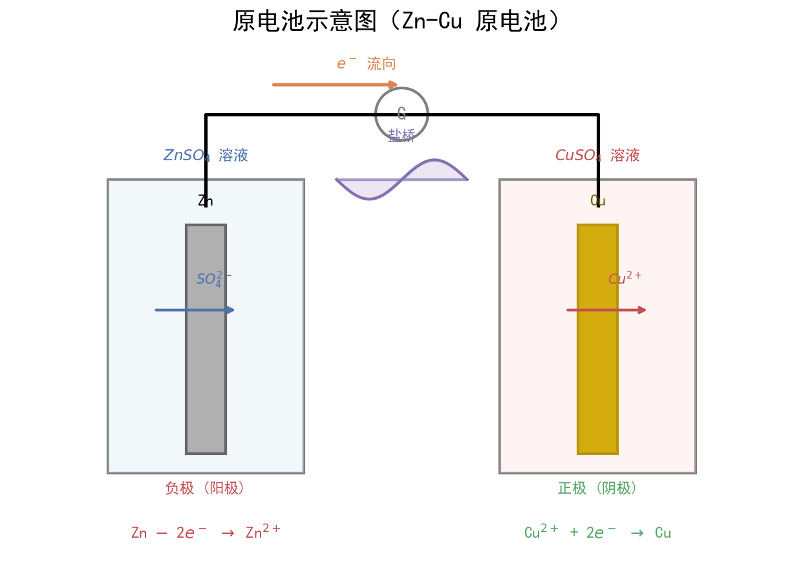

| 字段 | 内容 |
|---|---|
| 来源 | 人教版必修第二册 第六章 + 广东选择性考试 |
| 时间标签 | #高一筑基 |
| 难度 | ★★★☆☆ |
| 状态 | ⚠️待强化 |
| 试卷来源 | #广东选择性考试 |
| 广东考情 | 考查频率：中高频（近5年广东卷3-4次考查，常结合能量变化图像、盖斯定律计算）；难度定位：中档（盖斯定律计算需构建方程组，热化学方程式书写需规范）；特色描述：广东卷常结合新能源、碳中和等情境考查反应热，如锂电池、氢能源、CO₂资源化利用等；赋分提示：反应热计算是赋分"稳定得分区"，确保方程式书写规范和焓变符号准确 |
1. 键能法计算焓变：
ΔH = Σ(反应物键能) - Σ(生成物键能)
> 断键吸热，成键放热，反应热 = 吸热 - 放热
2. 盖斯定律：
化学反应的焓变只与始态和终态有关，与反应途径无关
若反应③ = 反应① + 反应②，则 ΔH₃ = ΔH₁ + ΔH₂
若反应③ = 反应① - 反应②，则 ΔH₃ = ΔH₁ - ΔH₂
若反应③ = n×反应①，则 ΔH₃ = n×ΔH₁
3. 能量图像法：
ΔH = E(生成物总能量) - E(反应物总能量)
ΔH = Eₐ(正) - Eₐ(逆)适用条件：键能法适用于已知各物质键能数据时；盖斯定律适用于无法直接测定焓变、需通过已知反应间接计算时注意事项：① 热化学方程式需标注物质状态(s/l/g/aq)；② ΔH有正负号，放热为负，吸热为正；③ 方程式系数变化，ΔH等比例变化；④ 可逆反应焓变指完全反应时的热效应

| 放热反应（ΔH < 0） | 吸热反应（ΔH > 0） |
|---|---|
| 燃烧反应 | 大多数分解反应（如CaCO₃分解） |
| 中和反应 | 少数分解反应（如H₂O₂分解放热） |
| 金属与酸/水反应 | 盐类水解（弱酸/弱碱盐） |
| 大多数化合反应（如N₂+3H₂→2NH₃） | 大多数化合反应的逆反应（即分解） |
| 缓慢氧化（如铁生锈） | 碳与CO₂反应：C + CO₂ → 2CO |
| 铝热反应 | 碳与水蒸气反应：C + H₂O → CO + H₂ |
| 合成氨、工业制硫酸 | Ba(OH)₂·8H₂O + NH₄Cl反应 |
盖斯定律口诀："目标反应当基准，已知反应来拼凑，倒转变号乘变倍，加和消去中间物，ΔH对应同运算"能量变化口诀："反应物在上放热降，反应物在下吸热升，活化能是门槛高，催化剂降低不改变ΔH"